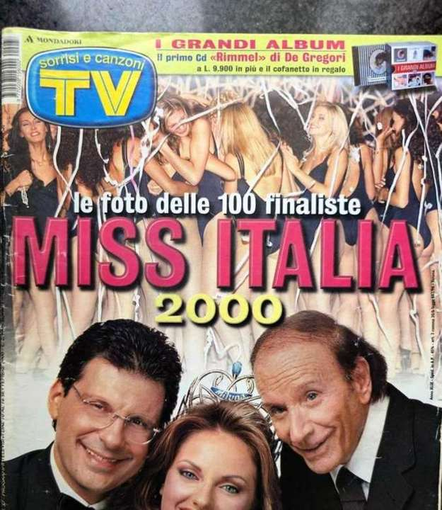

Studio Story
How the Garage Became a Studio
The story of the dream, the one-day clear-out, and how a family garage became the private studio where most of Valentina's music is written.
Read the story →
February 3, 2024
Do It Right
The story behind the single — a collaboration with two-time Grammy-winning producer Jon-John Robinson.
Read the story →
Press Archive
Valentina Black and Italian Television
From the Mondadori Miss Italia book to TV Sorrisi e Canzoni, Visto, Gazzetta di Parma and backstage at RAI's Quelli Che Il Calcio.
Read the story →